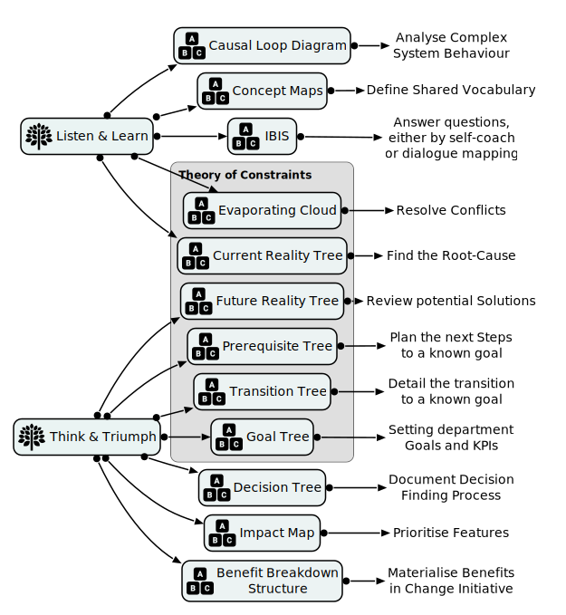

Welcome to Vithanco, the Home of Structured Visual Thinking Methods, Tools and Services
The Home of Structured Visual Thinking
Transform Your Thinking
Feeling stuck? Structured Visual Thinking can change that.
Why Choose It?
- Clear Your Mind: Turn confusion into clarity.
- Better Decisions: Uncover hidden solutions.
- Feel and Think: Engage both heart and mind.
Join Us
Many have already transformed their lives—now it's your turn.
Get started. Find clarity. Transform challenges into opportunities.

Find Clarity of Thought
What are you looking for?
- Are you looking for Facilitation? Then go to Services.
- Are you looking for information on the Vithanco Mac Application? Then look at Tools.
- Are you trying to learn more about Structured Visual Thinking? Then look at Methods.
- Are you looking for a specific Notation? Then look at Notations.
How can Structured Visual Thinking Help You to find Clarity of Thought?
Visual Thinking combines more senses by including the visual sense.
Structured Visual Thinking doesn't require any artistic ability. Instead, you draw relationships between ideas/thoughts and therefore create meaning.
Structured Visual Thinking Methods guides you towards meaningful diagrams that allow you to achieve outcomes. Sometimes the thought process to create the diagram with clarity of mind is the outcome. Sometimes the diagram is the blueprint for the next steps.
From Confusion to Clarity of Thought
We categorise the work in two brought categories:
- Listen & Learn is all about understanding the situation
- Think & Triumph is all about reaching conclusions
Each of these two categories has different Notations, different Methods and different outcomes.
A classification of Vithanco Notations
Latest Site Content
-
Fast-Track to Understanding Your Clients: The Freelancer's Secret
Dive into the world of Concept Mapping - a secret weapon for freelancers and knowledge workers to swiftly understand clients and get a head start on new engagements. This article illustrates the power and simplicity of Concept Maps in cutting through jargon, aligning perspectives, and fast-tracking your productivity, all while showcasing your value from day one.
-
The Different Types of Benefits
Understanding the different types of benefits is essential for driving project success.
-
Plan Features with Impact Mapping: A Visual Method for Product Development
Use an Impact Map to focus on the next features you want to create for your product.
-
Benefit Mapping: A Comprehensive Introduction
Understanding the different types of benefits is essential for driving project success.
-
Review Logical Reasoning with the Eight Categories of Legitimate Reservation
The 8 categories of legitimate reservation, as suggested by Dr. Eliyahu Goldratt
-
The Power of Perseverance: Unleashing the 5 Whys Method
How to use the 5 Whys method